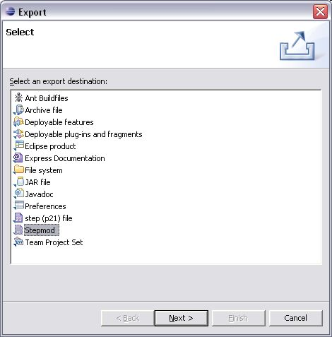
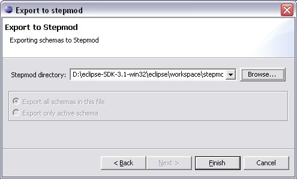
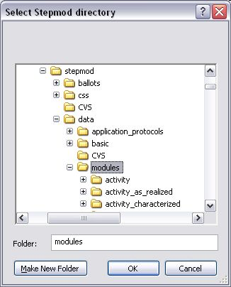
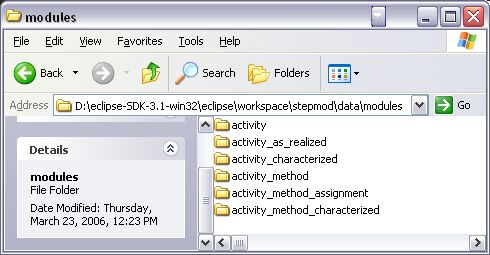

Figure 1. Export wizard window
- The Export to stepmod
window appears (see Figure
2).
- Select the location of the data to be exported in your file
system by using the Browse button
next to the Stepmod directory
field:
- The Select Stepmod directory
window appears (see Figure
3).
- Select an applicable location in your file system and click OK button.
- You can select whether all schemas, presenting int the current
file, should be exported or only the active one by selecting a
particular radio button:
- Select the Export all schemas
in this file radio button to export all, presenting in
the current file;
- Select the Export only active
schema radio button to export only the schema, which is
currently active in the Editor window.
- Click the Finish button
to start exportation and exit the current window.

Figure 2. Export wizard next
window

Figure 3. Select Stepmod
directory window
Exported Data
The exported data are located in the selected file system - each module
is located in the separate folder with the name
of the schema (see
Figure 4). The content
of this folder is:
- .gif
file - graphical representation of the exported schema. It is
referenced form the .xml
file.
- .xml
file - describes the coordinates of all objects, presented in the
schema, also references to the referenced schemas.

Figure 4. Exported schema